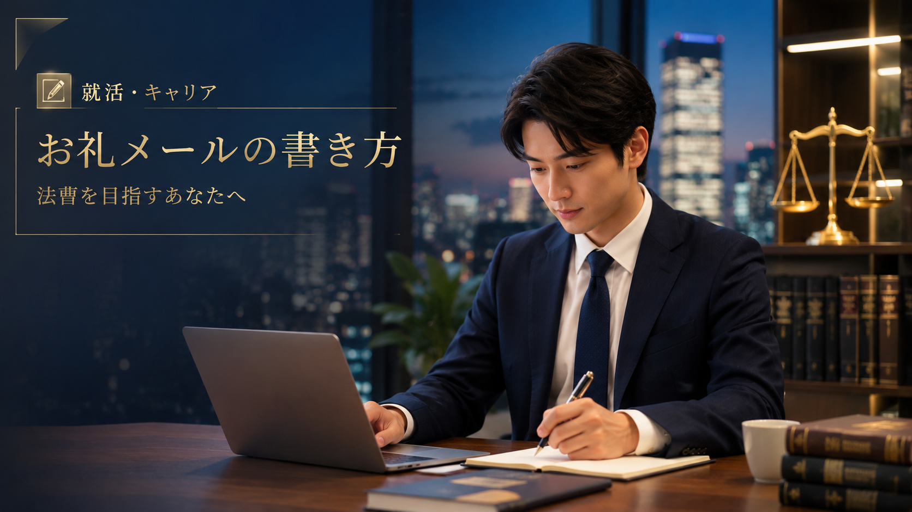

就活・キャリア
【法学部・ロースクール生向け】法律事務所のサマークラークでお礼メールは送るべき？書き方のマナーと状況別・例文集

法律事務所のサマークラーク（夏季インターンシップ）は、四大法律事務所をはじめとする人気事務所を中心に、実際の法曹実務や事務所の雰囲気を肌で感じられる絶好のチャンスです。 数日〜数週間にわたるプログラムが無事に終わったあと、「お礼のメールは送るべき？」「どんな風に書けば失礼にならない？」と悩む学生の方も多いのではないでしょうか。 結論から言うと、法律事務所での実務体験や指導に対してお礼メールを送信することは、社会人としてのマナーであるだけでなく、自身の誠実な人柄をアピールする絶好の機会になります。 この記事では、サマークラーク後のお礼メールの基本マナーから、送るタイミング、そしてそのまま使える4つの具体例まで詳しく解説します。
1. サマークラーク後のお礼メールを送るべき3つの理由
「参加後にわざわざメールを送るのは迷惑ではないか」と心配する声もありますが、法律事務所への就職活動（就活）においては、お礼メールを送ることで以下のメリットがあります。
-
感謝の気持ちと誠実さが伝わる
指導にあたってくれた多忙な弁護士や事務スタッフへの感謝を形にすることで、好印象を残せます。 -
学びの定着をアピールできる
プログラムを通じて何を得たのかを言語化することで、学習意欲の高さをアピールできます。 -
印象をリフレッシュできる
選考や面談を兼ねている場合、終了直後の丁寧な連絡がポジティブな記憶を定着させます。
2. お礼メールを送る際の基本マナーと注意点
メールを作成・送信する際は、法曹を目指す者としてのプロ意識を持ち、次のポイントを必ず守りましょう。
-
送信のタイミングは「翌営業日の午前中」がベスト
記憶が新しく、相手の業務が落ち着きやすい終了翌日の午前中（遅くとも翌日中）に送信するのがマナーです。 -
件名は「用件・大学名・氏名」で一目でわかるようにする
多忙な弁護士が一目で内容を理解できるよう、簡潔に記載します。（例：【サマークラークのお礼】〇〇大学法科大学院 法学太郎） -
宛先は正式名称で記載する
事務所名や弁護士のお名前は、略称を使わず「〇〇法律事務所」「弁護士 〇〇先生」と正式に記載します。 -
具体的なエピソードを1つ以上盛り込む
「楽しかった」で終わらせず、どの業務やアドバイスが印象に残ったのかを具体的に書きます。
3. 【状況別】そのまま使えるお礼メールの具体例4選
ご自身の参加形態や状況に合わせて調整できる、4つの具体例をご紹介します。
①【王道・スタンダード型】数日間の一般的なサマークラークの場合
件名【サマークラークのお礼】〇〇大学法科大学院 法学太郎
〇〇法律事務所
弁護士 〇〇 先生
お世話になっております。
〇〇大学法科大学院の法学太郎と申します。
この度はお忙しい中、〇日間におよぶサマークラークに参加させていただき、誠にありがとうございました。
実際の案件をベースにした起案の作成や、先生方の洗練されたリサーチ・思考のプロセスを間近で拝見し、教科書や机上の学習では得られない極めて実践的な学びを得ることができました。
特に、〇〇の事件に関するご指導において、依頼者の利益を守りつつ法的妥当性を追求する姿勢に深く感銘を受けました。また、ご多忙の中、私の未熟な起案に対しても一つひとつ丁寧なフィードバックをいただけたことは、今後の学習における大きな指針となります。
今回のサマークラークを通じて、法曹という職業のやりがいと責任の重さを改めて実感いたしました。
末筆ではございますが、〇〇法律事務所の益々のご発展と、先生方の今後ますますのご活躍を心よりお祈り申し上げます。
改めて、貴重な機会をいただき本当にありがとうございました。
〇〇大学法科大学院 3年
法学太郎
電話番号：090-0000-0000
メールアドレス：xxxx@xxxx.com
②【個別指導・ランチ同席など】特定の弁護士に深くお世話になった場合
件名【御礼】サマークラークでお世話になりました 〇〇大学・法学太郎
〇〇法律事務所
弁護士 〇〇 先生
お世話になっております。
〇〇大学法科大学院の法学太郎です。
先日はお忙しい中、サマークラークのプログラムにご対応いただき、誠にありがとうございました。
実務の現場を体験する中で不安も多かったのですが、先生には〇〇の場面において温かく、かつ的確にご指導いただき、緊張が和らぐとともに法曹としての心構えを深く学ぶことができました。
また、お昼ご一緒させていただいた際に伺った、実務におけるやりがいやキャリアに関するお話は、今後の進路を考える上で非常に大きな刺激となりました。
先生からいただいたアドバイスを胸に、今後はより一層法的知識の習得と論理的思考力の向上に励んでまいる所存です。
季節柄、どうかお身体を大切にお過ごしください。
今後ともご指導ご鞭撻のほど、何卒よろしくお願い申し上げます。
〇〇大学法科大学院 3年
法学太郎
電話番号：090-0000-0000
メールアドレス：xxxx@xxxx.com
③【グループワーク・事務所説明会メイン】短期間・複数人参加の場合
件名【インターンシップのお礼】〇〇大学 法学太郎
〇〇法律事務所
採用ご担当者様
お世話になっております。
〇〇大学法科大学院の法学太郎と申します。
この度は、貴事務所のサマークラーク（インターンシップ）に参加させていただき、誠にありがとうございました。
第一線で活躍されている弁護士の皆様のお話や、事務所全体のプロフェッショナルな雰囲気を肌で感じることができ、企業法務および訴訟実務に対する理解が飛躍的に深まりました。
特に、グループワークを通じて実感した法的アプローチの難しさと、チームで議論を深める面白さは、これからの学生生活におけるモチベーションとなりました。
お忙しい中、私たちのために貴重なお時間を割いてくださり、重ねて御礼申し上げます。
貴事務所のますますのご発展と、皆様のご健勝をお祈り申し上げます。
〇〇大学法科大学院 3年
法学太郎
電話番号：090-0000-0000
メールアドレス：xxxx@xxxx.com
④【送信が遅れてしまった場合】数日経過してから送る場合
件名【御礼の遅れのお詫び】サマークラークに参加いたしました 〇〇大学 法学太郎
〇〇法律事務所
弁護士 〇〇 先生
お世話になっております。
〇〇大学法科大学院の法学太郎です。
貴事務所でのサマークラーク終了後、速やかにお礼を申し上げるべきところ、諸事情によりご連絡が遅くなってしまいましたことを、心よりお詫び申し上げます。
プログラム期間中は、実務の厳しさとやりがいを身をもって学ぶことができ、中でも〇〇の経験は私の将来のキャリア選択において決定的な学びとなりました。
日々の学業や試験勉強に励む中でも、事務所で体験した光景や先生方からいただいた言葉を思い出しては、身の引き締まる思いがしております。
お忙しい中ご指導いただきましたことに、改めて深く感謝申し上げます。
いただいた学びを今後の法曹資格の取得および実務家としての成長に繋げてまいります。
季節の変わり目ですので、先生におかれましてはどうかご自愛ください。
今後とも何卒よろしくお願い申し上げます。
〇〇大学法科大学院 3年
法学太郎
電話番号：090-0000-0000
メールアドレス：xxxx@xxxx.com
まとめ
法律事務所のサマークラーク後のお礼メールは、「感謝を伝えること」と「具体的な学びを言語化すること」が何よりも大切です。 定型文をそのまま送るのではなく、自分が実際に体験したことや心動かされたエピソードを少しだけ自分の言葉で付け加えることで、読み手に強い好印象を残すことができます。 しっかりマナーを守って、納得のいく就職活動・キャリア形成に繋げてくださいね！
お礼メールで書ける「具体的なエピソード」は、実際に事務所を訪問してこそ生まれます。リーガルパレット関西で、先輩と一緒にサマークラークの準備を進めませんか？
サークルに入会する